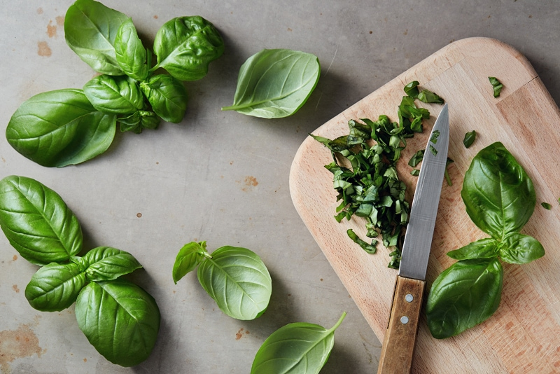

#4 – Cutting Boards
Did you know that cutting boards are important when it comes to keeping a sharp edge on your knife? A properly designed board should minimize wear and tear on the edges of your knife, yet be able to handle repeated use.

At the end of this post, if you still feel undecided on what type of cutting board is best for you, hop on over to America’s Test Kitchen and read through their site regarding cutting boards. It’s quite extensive. After visiting their site and furthering my education through research and my own experience, I broke it down to three basic types of boards — plastic, bamboo, and wood. I avoid cutting boards made of glass, ceramic, or marble. These types do not have any “give” and will dull your knife. That kind of surface is also dangerous because knives can slip on the hard, slick surface.
With all the confusing information out there, a person could write a book on this topic… I, however, wanted to simplify it so you could pick a cutting board and then move on to other things… like making yummy raw recipes. Let’s sit back, take a deep breath, and take the stress out of selecting a cutting board.
Plastic and Composite Boards
Pros:
- Less expensive.
- Plastic cutting boards come in a variety of shapes, sizes, and colors making it easy to mix and match your kitchen decor.
- They can be washed in the dishwasher.
- Plastic and composite boards typically don’t stain or retain odors.
Cons:
- They can hold bacteria if not cared for properly. Replace the board if it has deep grooves and gouges.
- Plastic cutting boards come in all thicknesses. Though the super-thin boards may be intriguing, be aware that they can move and spin while cutting, this can be a danger. Plastic boards can be slippery so be sure to lay a damp cloth underneath to stabilize.
How to Care For:
- If you wash by hand, let it air dry on its side. Why? Dish towels hang around the kitchen and get wiped on everything, making them the ideal vehicle for spreading bacteria from one kitchen tool or surface (or even your hands) to another.
- Use the dishwasher if you have one.
Bamboo Cutting Boards
Pros:
- Bamboo is the choice of many environmentalists; it is a sustainable, renewable resource that needs no chemicals to manufacture.
- It’s biodegradable, unlike plastic.
Cons:
- They can hold bacteria if not cared for properly. Replace if it warps, splits, or has deep grooves and gouges.
- Bamboo is harder than traditional hardwood, which means it’s also harder on your knives.
- You have to season the board to avoid it from drying out.
- You have to wash a bamboo cutting board by hand.
- Bamboo cutting boards can be more expensive than regular wood and plastic cutting boards.
- Some bamboo cutting boards are glued together with adhesives that have formaldehyde in them. Make sure that it has a non-toxic label on it to avoid this.
- Bamboo boards can warp and split.
How to Care For:
- Hand wash your natural bamboo cutting board with warm water and soap. Let it air dry on its side. Again, dish towels hang around the kitchen and get wiped on everything, making them the ideal vehicle for spreading bacteria.
- Never soak in water, prolonged submersion in water can open the natural fibers and cause splitting.
- Occasionally treat with Totally Bamboo’s Revitalizing Mineral Oil (see below) to protect and extend the life and beauty of your board. Spread the oil liberally across the surface of your board, let sit overnight if possible, then wipe away any remaining oil before use. Repeat this process whenever the board looks dry.
Wood Cutting Boards
Pros:
- Wood is a renewable resource, although not nearly as easily renewable as bamboo.
- Look for soft, straight, and non-porous grains of wood such as walnut, which is well-known not to dull and damage the blade.
- There is something very personal about a wooden cutting board and can be used for years with proper care.
Cons:
- Regular wood cutting boards, over time, get grooves in them where bacteria can get caught and transfer to food, this is especially true if the cutting board is not cleaned properly.
- They can warp and split over time, especially if you don’t do regular maintenance with oil.
- They can harbor odors.
- Wood cutting boards tend to weigh more than bamboo or plastic boards, this may or may not be an issue for you.
- They are more expensive than plastic cutting boards.
How to Care For:
- Hand wash with warm water and soap. Let it air dry on its side.
- Never soak in water, prolonged submersion in water can open the natural fibers and cause splitting.
- Occasionally treat with oil to protect and extend the life and beauty of your board. Spread the oil liberally across the surface of your board, let sit overnight if possible, then wipe away any remaining oil before use. Repeat this process whenever the board looks dry.
Cutting Board Storage
- It is best to store a cutting board on its edge. This way if the board is damp, it will allow air to flow around it, discouraging bacteria from taking up residence.
- Below, I shared a couple of units that I own. These holders come in many different sizes so be sure to find one that will fit in your storage space and hold the number of cutting boards that you own.
The Bottom Line
Look, I don’t want you to be fretting over this and getting all stressed out. All boards will dull your knives, some just quicker than others. Knives will ALWAYS need to be sharpened over time. All boards can harbor bacteria… if not properly washed. All wooden boards can warp and crack… if not properly maintained.
Whichever material the cutting board is that you selected… care for it as instructed, wash it after every use, replace it when needed, and sharpen your knives as they become dull. We just don’t have time to be stressing! Below are some links to some cutting boards that I recommend.
Let’s Go Shopping!
Plastic Cutting Boards
I selected these plastic cutting boards due to size, functionality, quality, and cost.
Bamboo Cutting Boards
As mentioned above, some bamboo cutting boards are glued together with adhesives that have formaldehyde in them. The ones below do NOT use these chemicals. Don’t forget the conditioning oil for maintenance.
Wooden Cutting Boards
I selected the walnut board because it is softer and less destructive on a knife. Don’t forget the conditioning oil for maintenance. Please note that the John Taylor conditioner has beeswax in it, therefore not vegan. If that is an issue, you can use the bamboo oil up above.
Cutting Board Storage Idea
It’s always best to store your cutting board on its edge so air can reach both sides, especially if damp after washing. I use the following holder for all of my cutting boards.
Nouveauraw.com is a participant in the Amazon Services LLC Associates Program, an affiliate advertising program designed to provide a means for us to earn fees by linking to Amazon.com and affiliated sites – at no extra cost to you.
Thank you for your support! amie sue
© AmieSue.com